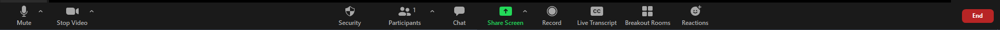

Meeting Controls Icons
We will be describing the icon's meaning when in a zoom meeting. This is a picture of what the icons look like when in a zoom meeting. We will be describing them from left to right.
- The first icon is the mute button. Currently the image is not clicked so the audio is enabled from your device. This means you are unmuted and whatever you say the others in the meeting can hear. If you press the button it will put a red slash through the icon and that means you are muted. This means nobody can hear what you are saying.
- The next icon is the video button. Currently the button is not pressed which is why there is a red slash through it. This means that your video is turned off and nobody can see you. When you press it again the video will be turned on and your camera is enabled. People can see what your camera sees.
- The next icon is the security button. You only need this if you are the host of the meeting. Here the host can enable and disable certain security features.
- Next is the participants icon. You can click this to get a list of everyone in the meeting.
- The next is the chat button. You can press this button to see the chat from the meeting. You can send messages in the chat to everyone or select individual people to send a message to. There will be a circle with a number in it when there are unread messages in the chat.
- Next is the share screen button. You can click this to share your screen with the group. You can learn more about this in our tutorial about sharing a screen.
- The next button is the record button. This is where you can record a meeting. Learn more about this in our record a meeting tutorial.
- Next is the user transcript button. You can click this to enable live captions.
- Breakout rooms button is to join a breakout room if the host has them opened. If there are breakout rooms open then you can click that button and choose what room you want to go into.
- The reactions button allows you to choose between little icons or emojis that can be seen in the corner of your screen by everyone in the meeting.
- The red end meeting button is to either end the meeting if you are a host or to leave the meeting if you are a participant.